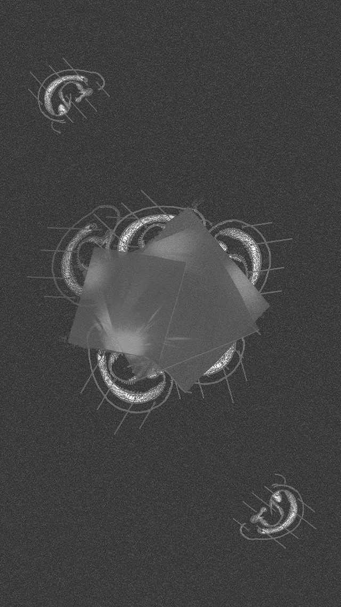

Los pedales dan la vuelta, y vuelven a darla, mecánicamente. Compartiendo el centro, suspendidos, acaso sin direccionalidad aparente, escriben en el aire la esfera que impulsa a las ruedas a morder el suelo, trazando una doble línea en el asfalto. Algunos dirán que esta línea es una sola. Pero insisto en que detrás de la que se escribe visiblemente, otra, tenue, compone la estela. Y reverbera hacia quién sabe qué sombras, qué paredes.
Montado a la bicicleta, pedaleando desde hace miles de años, sospeché que mi destino fuera un despropósito. Solté el manubrio. Miré la ciudad de Buenos Aires y dejé de mover los pies. En la inercia me deslicé por una bajada de la calle Córdoba. Poco a poco, comencé a notar la presencia de un viento ensordecedor que doblaba los edificios como si fueran álamos. Desde atrás, ese vendaval imparable empujándome se sentía como una suave brisa.
Con asombro descubrí que si yo pedaleaba, el viento cesaba y viceversa.

Confundido, llegando al semáforo en rojo apreté el freno de adelante y caí de costado al piso como un cachetazo. Fue como si hubiera olvidado andar en bici. Una familia que pasaba por la vereda se acercó a preguntarme si estaba bien y respondí que sí, rápido y avergonzado. –pero yo no lo vi chocar contra nada!- oí que decía uno, mientras se alejaban echando vistazos intermitentemente hacia atrás.
Estampado en el piso, maldije el camino y lloré un poco. Cuando me quise incorporar descubrí que la brea en el suelo estaba contenida por un pozo cuya profundidad ignoro, pero tenía el brazo y la pierna izquierda absorbidos por completo.
Luché desesperadamente por salir, pero mi cuerpo remaba ahogado en la viscosidad del asfalto mientras me hundía lentamente.

Cuando el líquido cubrió mis ojos, comencé a caminar por una playa ocre y calurosa. Un hombre en un altar daba un discurso y convencía a la gente de protección y comunidad en un pacto con César. Enseguida reconocí que hablaba del César, de Roma, tuve la vaga noción de que estaba caminando por Mauritania pero en algún tiempo desproporcionadamente lejano.
Mientras pensaba esto, la imagen comenzó a temblar hasta que el hombre en el altar se convirtió en un trueno, estaba lloviendo torrencialmente y yo desde el castillo de piedra miraba la montaña bebiendo alcohol en un vaso de madera. La bebida cayó al piso y una ola gigante entró por la proa del barco arrasando la cubierta. La noche nos despertó a toda la tripulación con una tormenta intempestiva y corrí hacia el área de comando para sujetar el timón.
El ruido ensordecedor del viento y el estallido de una ola a un costado de donde me hallaba, echaron sobre mí un telón de bruma. Confundido, tardé un instante en reconocer que detrás de esa pared transparente amanecía en el horizonte, mientras las estrellas caían como hojas de un árbol.
El sol comenzó a parpadear. Compuso un trueno, un profeta, el mar, un sendero en el valle desierto por el que me gusta caminar, un vaso de alcohol, y el barco se detuvo toscamente, chocó contra algo, todos tropezamos a bordo. En un instante, como un estruendo, cundió el silencio.
Fue entonces que vi el alba en el horizonte y, con claridad, las terrazas de un bosque de edificios donde el barco tuvo el tino de encallar. Me asomé por la borda y reconocí a quien se deslizaba a toda velocidad en bicicleta por la calle. –Olan!- Le grité, pidiendo auxilio. Pero parecía que mis gritos sonaran como un pájaro,
o el viento, o una puerta cerrándose, o algo más insignificante aún.

CREDITOS
- Composición, Mahuro Coletti
- Arte gráfico, Jacinta Vilalta
- Diseño web, Deboogui
- Guitarra y voz, Mahuro Coletti
- Voz, Flor Curcio
- Acordeón, Margarita Brassara
- track 1 al 6 grabados y mezclados en Ideomusic, por Mariano Miguez en 2021/22
- track 7 mezclado y producido en el taller de Shaman Herrera en 2020
- Masterizado en Ideomusic por Mariano Miguez
AGRADECIMIENTOS
Deboogui, Jacinta Vilalta, Santiago Iglesias, Dante Mercuri, David Guzmán, Carmen Baliero, Flor Curcio, Margarita Brassara, Mariano Miguez, Melina Moguilevsky, Camila Spíndola, por escuchar, por tu aporte, por tu compromiso y generosidad,GRACIAS!